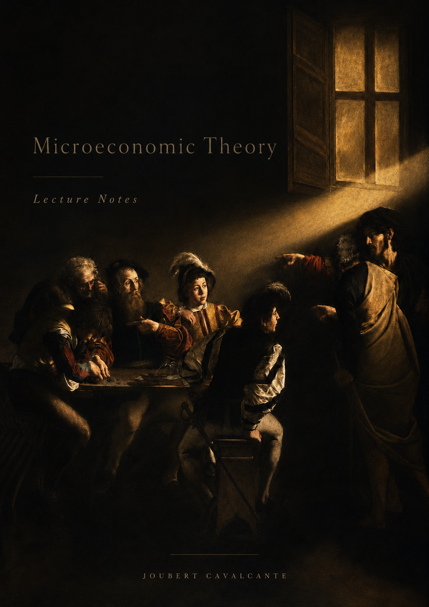
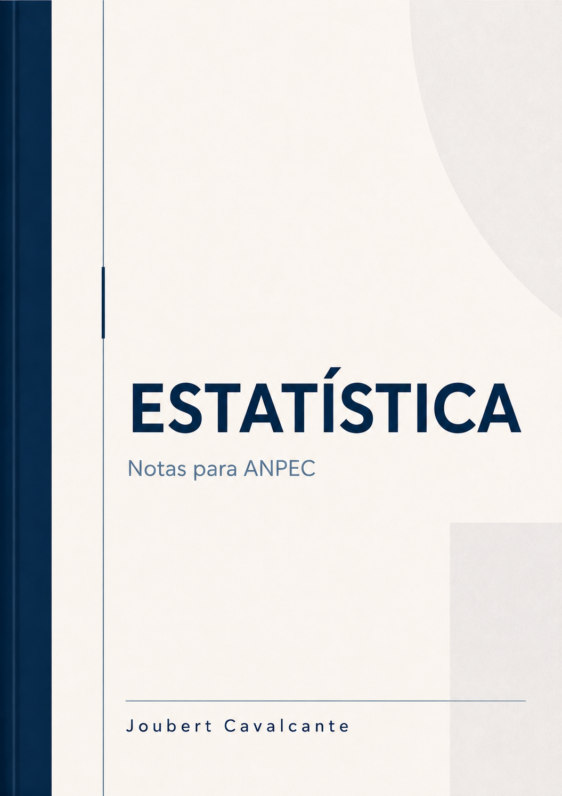

Lecture notes
Real Analysis: For Economists
Proofs, sequences, topology, continuity, differentiation, compactness, optimization, and mathematical foundations for economists.
Lecture notes
Proofs, sequences, topology, continuity, differentiation, compactness, optimization, and mathematical foundations for economists.
Lecture notes
Probability, estimation, hypothesis testing, distributions, asymptotic ideas, and foundations for econometrics.

Lecture notes
Choice, consumer and producer theory, equilibrium, welfare, games, information, and market structure.
Lecture notes
Strategic form games, equilibrium concepts, dynamic games, repeated games, information, and applications.
Lecture notes
Collective choice, institutions, voting, redistribution, political agency, and models of policy formation.
Study notes for the Brazilian graduate economics entrance exam, organized by subject.
ANPEC notes
Calculus, linear algebra, optimization, sequences, systems, and problem-solving routines for ANPEC.
ANPEC notes
Consumer theory, firm theory, equilibrium, welfare, uncertainty, and strategic interaction.
ANPEC notes
Growth, monetary economics, IS-LM, open economy, inflation, expectations, and policy debates.

ANPEC notes
Probability, distributions, estimation, hypothesis testing, regression, and interpretation.